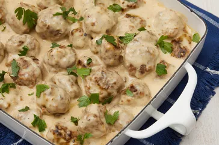

Swedish Meatballs

This Swedish Meatballs rocks!
This Swedish meatball recipe is our family's Christmas tradition. We frequently double the recipe and keep it warm in a slow cooker. Worth the effort, and the meatballs are even better the next day! Reserve brown gravy and add sour cream to it the day you serve the leftovers.
Ingredients
- 2 slices day-old white bread, crumbled
- ½ cup heavy cream
- 1 teaspoon butter
- 1 small onion, minced
- ⅔ pound ground beef
- ⅓ pound finely ground pork
Steps
- Preheat the oven to 350 degrees F (175 degrees C).
- Place bread crumbs into a small bowl; mix in cream. Allow to stand until crumbs absorb cream, about 10 minutes.
- Meanwhile, melt 1 teaspoon butter in a skillet over medium heat.
- Mix ground beef, ground pork, egg, brown sugar, salt, black pepper, nutmeg, allspice, and ginger with onion in the mixing bowl.
- Melt 1 tablespoon butter in a large skillet over medium heat.
- Place browned meatballs into a baking dish, pour in chicken broth, and cover with foil.